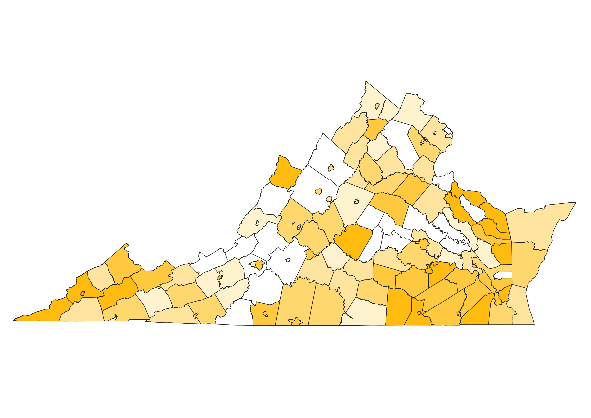
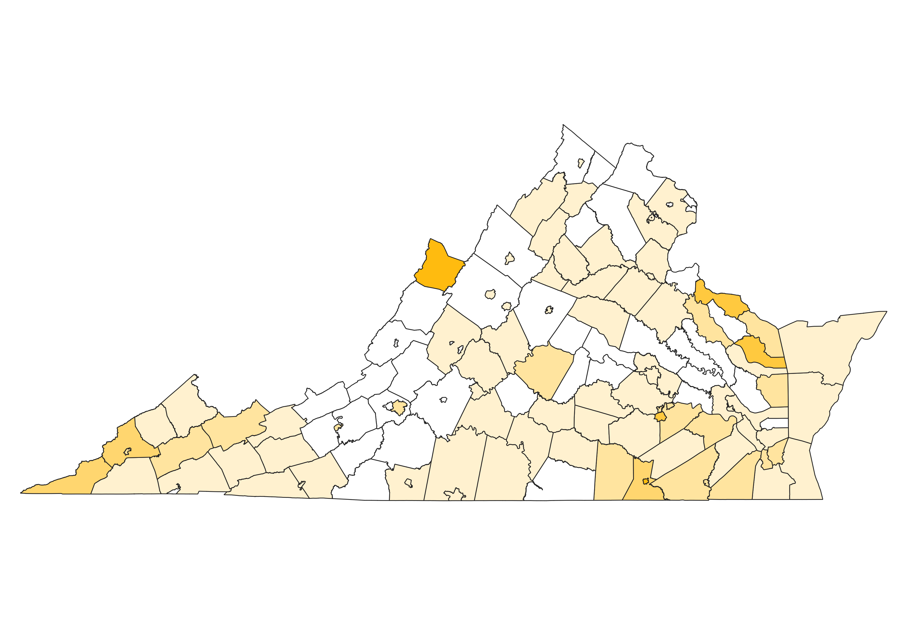
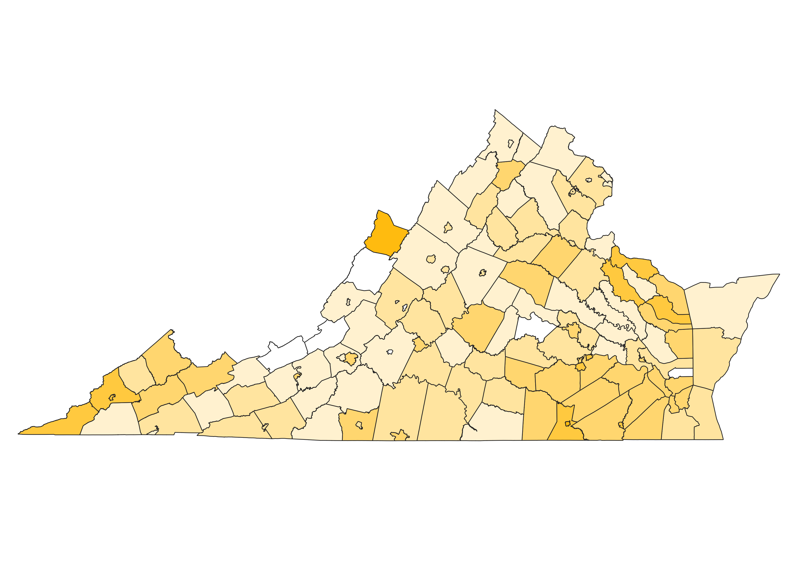

Homework 6b: Ratios and Data Classification
Samuel Long
For this homework, I used a ratio of the number of unemployed people in each county over the total population in each county of the state. I created this ratio so I could better represent where employment rates were higher per population, and (interestingly) it showed that they were higher in cities!

Here is my data represented with the Equal Count (or quantile) classification. This classification puts the same number of counties into each interval. I like the variation in shades of orange, but this might not be the perfect classification for representing data.

Here is my data represented with the Equal interval classification. This classification essentially makes all the intervals in the choropleth the same, which I believe doesn't represent the data as (especially with the ratio) because there's no way to see which interval is more prevalant. There's also no color which is lame.

Here is my data represented with the Natural Breaks classificaiton. This classification attempts to divide intervals where there are large "breaks" in the data. By doing this, it's supposed to give less variablility in each shade of orange on my map. I think it looks a little strange because it made a whole lot of the map the same color... probably due to the ratio. However, this could be a good classification for representing numerical data that is not ratioed.